Witam Cię serdecznie w Feel Perfect.
Nazywam się Piotr i jestem dyplomowanym technikiem masażystą.
Masaż był najpierw moim zainteresowaniem, a następnie stał się pasją i sposobem na życie. Moja przygoda z masażem rozpoczęła się ponad 3 lata temu. Przez ten czas miałem okazję doskonalić swój zawód w klinice ortopedycznej Carolina Medical Center, warszawskich salonach SPA, oraz podczas wielu maratonów. Zdobyte doświadczenie, wskazówki oraz porady wykorzystuję do dziś i cały czas poszerzam swoje umiejętności.
Dobrze wiem, jak stres, praca siedząca lub intensywne treningi na siłowni mogą wpłynąć na nasze samopoczucie fizyczne i psychiczne, a także, napięcie mięśni. Na własnej skórze przekonałem się jak wiele może zdziałać w tych sytuacjach masaż. Każda osoba wychodząca po zabiegu z lepszym samopoczuciem utwierdza mnie w przekonaniu, że właśnie tym powinienem się zajmować.
Zainteresowałem Cię tym co robię? Zapraszam na masaż.
-
Masaż klasyczny
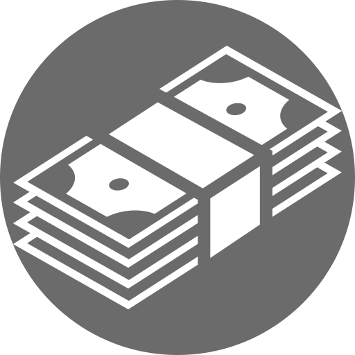100zł
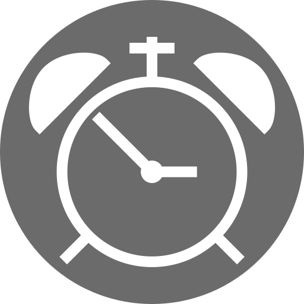60 min.
Masaż klasyczny to najpopularniejszy zabieg. W zależności od zastosowanej techniki, może on mieć różne działanie: wyciszające, pobudzające, przeciwbólowe, regenerujące, lecznicze, a nawet odchudzające.
-
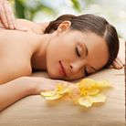
Masaż relaksacyjny
80zł
60 min.
Powolny masaż wykonywany w celu zniesienia napięcia mięśniowego oraz psychicznego. Wykonywany najczęściej z użyciem ciepłego olejku, aromaterapii przy muzyce relaksacyjnej.
-
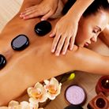
Masaż gorącymi kamieniami
150zł
90 min.
Masaż ten wykonywany jest przy pomocy gładkich, czarnych, bazaltowych kamieni, ogrzewanych przed zabiegiem do temperatury około 50 stopni. Działa głęboko relaksująco, odprężająco i przeciwbólowo.
- 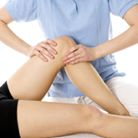
Masaż sportowy
120zł
60 min.
Masaż indywidualnie dostosowany do wykonywanej dyscypliny sportowej. Dzieli się na masaż: przed treningowy, powysiłkowy, izometryczny. Pomaga osiągać lepsze wyniki w sporcie i szybszą regeneracje.
Masaż Aromaterapeutyczny
100zł
60 min.
Masaż przy użyciu naturalnych olejków eterycznych. W zależności od zamierzonego efektu olejki mogą mieć charakter pobudzający, rozluźniający, wyciszający, przeciwbólowy oraz leczniczy.
- 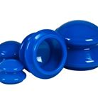
Masaż bańką chińską / Antycellulitowy
140zł
60 min.
Skuteczny masaż niwelujący uporczywy cellulit. Regularnie i systematycznie wykonywane masaże antycellulitowe, świetnie poprawiają ukrwienie skóry, sprawiają, że staje się jędrna i elastyczna.
- 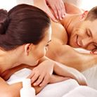
Masaż dla par
200zł
60 min.
Masaż dla par specjalnie dobrany do państwa potrzeb. Zabierz ukochaną osobę, przyjaciela lub zrób znajomym miły prezent :)
- 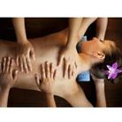
Masaż na 4 ręce
200zł
60 min.
Zabieg wykonywany przez dwójkę masażystów wykonujących te same techniki. Masaż na działanie relaksacyjne, odprężające, lecznicze.
Masaż bambusami
100zł
60 min.
Masaż bambusem jest masażem pobudzającym tkanki głębokie. Wykonywany za pomocą specjalnych kijków bambusowych, działa relaksacyjne oraz leczniczo.
- 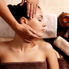
Drenaż limfatyczny
100zł
60 min.
Masaż w którym poprzez zastosowanie odpowiednich technik umożliwia się usprawnienie krążenia limfy i płynów tkankowych. Umożliwia to zapobieganie i leczenie chorób związanych z zastojem limfy.
- 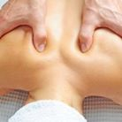
Masaż leczniczy
100zł
60 min.
Masaż indywidualnie dobrany do danej jednostki chorobowej. Usprawnia procesy naprawcze organizmu, przyspiesza regenerację oraz niweluje dolegliwości bólowe.
- 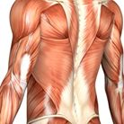
Masaż powięziowy
60zł
40 min.
Masaż, który rozluźnienie, wydłużenie i zlikwidowanie zrostów oraz nieprawidłowych wzorców ruchowych znosi ból i przywraca prawidłowy zakres ruchu.
- 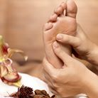
Refleksologia stóp
60zł
40 min.
Refleksologia to specjalne wykorzystanie technik uciskowych (punktowych) uwalniające przepływ energii w organizmie. Stymulując odpowiednie punkty uciskami można uwolnić zablokowane kanały energetyczne.
Skontaktuj się ze mną
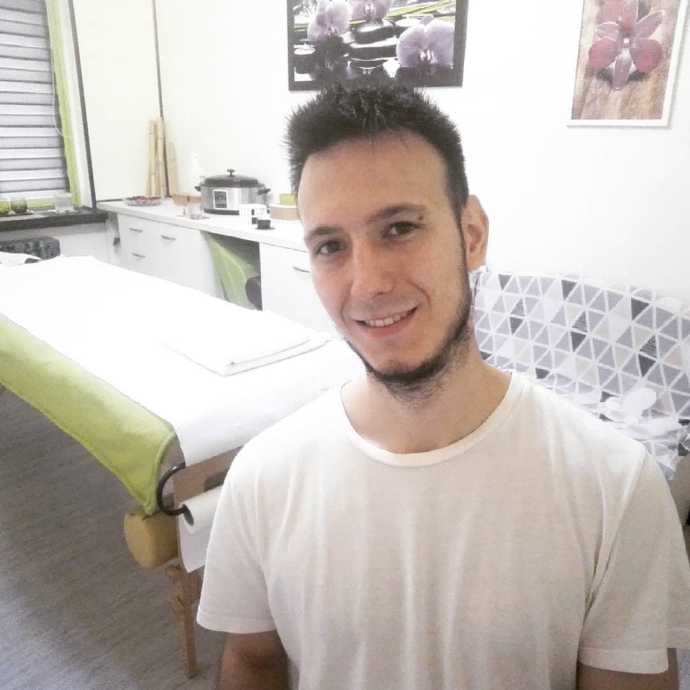Piotr Wiśniewski
Znajdź mnie na Social Media i sprawdź promocje na Grouponie


- 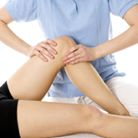